require(mice)
require(lattice)
require(pan)
set.seed(123)mice: Imputing multi-level data
Vignette 6 of 10
This is the sixth vignette in a series of ten.
In this vignette we will focus on multi-level imputation. You need to have package pan installed. You can install it by running: install.packages("pan").
1. Open R and load the packages mice, lattice and pan.
We choose seed value 123. This is an arbitrary value; any value would be an equally good seed value. Fixing the random seed enables you (and others) to exactly replicate anything that involves random number generators. If you set the seed in your R instance to 123, you will get the exact same results and plots as we present in this document.
We are going to work with the popularity data from Joop Hox (2010). The variables in this data set are described as follows:
| pupil | Pupil number within class |
| class | Class number |
| extrav | Pupil extraversion |
| sex | Pupil gender |
| texp | Teacher experience (years) |
| popular | Pupil popularity |
| popteach | Teacher popularity |
Inspection of the incomplete data
1. Open the popular.RData workspace. A workspace with complete and incomplete versions of the popularity data can be obtained here or can be loaded into the Global Environment by running:
con <- url("https://www.gerkovink.com/mimp/popular.RData")
load(con)This workspace contains several datasets and functions that, when loaded, are available to you in R. If you’d like to see what is inside: run the following code
ls() [1] "con" "has_annotations"
[3] "icc" "mice.impute.2lonly.mean2"
[5] "popMCAR" "popMCAR2"
[7] "popNCR" "popNCR2"
[9] "popNCR3" "popular" The dataset popNCR is a variation on the Hox (2010) data, where the missingness in the variables is either missing at random (MAR) or missing not at random (MNAR).
2. Check with the functions head(), dim() - alternatively one could use nrow() and ncol() instead of dim() - and summary() how large the dataset is, of which variables the data frame consists and if there are missing values in a variable.
head(popNCR) pupil class extrav sex texp popular popteach
1 1 1 5 1 NA 6.3 NA
2 2 1 NA 0 24 4.9 NA
3 3 1 4 1 NA 5.3 6
4 4 1 3 <NA> NA 4.7 5
5 5 1 5 1 24 NA 6
6 6 1 NA 0 NA 4.7 5dim(popNCR)[1] 2000 7nrow(popNCR)[1] 2000ncol(popNCR)[1] 7summary(popNCR) pupil class extrav sex texp
Min. : 1.00 17 : 26 Min. : 1.000 0 :661 Min. : 2.0
1st Qu.: 6.00 63 : 25 1st Qu.: 4.000 1 :843 1st Qu.: 7.0
Median :11.00 10 : 24 Median : 5.000 NA's:496 Median :12.0
Mean :10.65 15 : 24 Mean : 5.313 Mean :11.8
3rd Qu.:16.00 4 : 23 3rd Qu.: 6.000 3rd Qu.:16.0
Max. :26.00 21 : 23 Max. :10.000 Max. :25.0
(Other):1855 NA's :516 NA's :976
popular popteach
Min. :0.000 Min. : 1.000
1st Qu.:3.900 1st Qu.: 4.000
Median :4.800 Median : 5.000
Mean :4.829 Mean : 4.834
3rd Qu.:5.800 3rd Qu.: 6.000
Max. :9.100 Max. :10.000
NA's :510 NA's :528 The data set has 2000 rows and 7 columns (variables). The variables extrav, sex, texp, popular and popteach contain missing values. About a quarter of these variables is missing, except for texp where 50 % is missing.
3. As we have seen before, the function md.pattern() is used to display all different missing data patterns. How many different missing data patterns are present in the popNCR dataframe and which patterns occur most frequently in the data? Also find out how many patterns we would observe when variable texp (teacher experience) is not considered.
md.pattern(popNCR)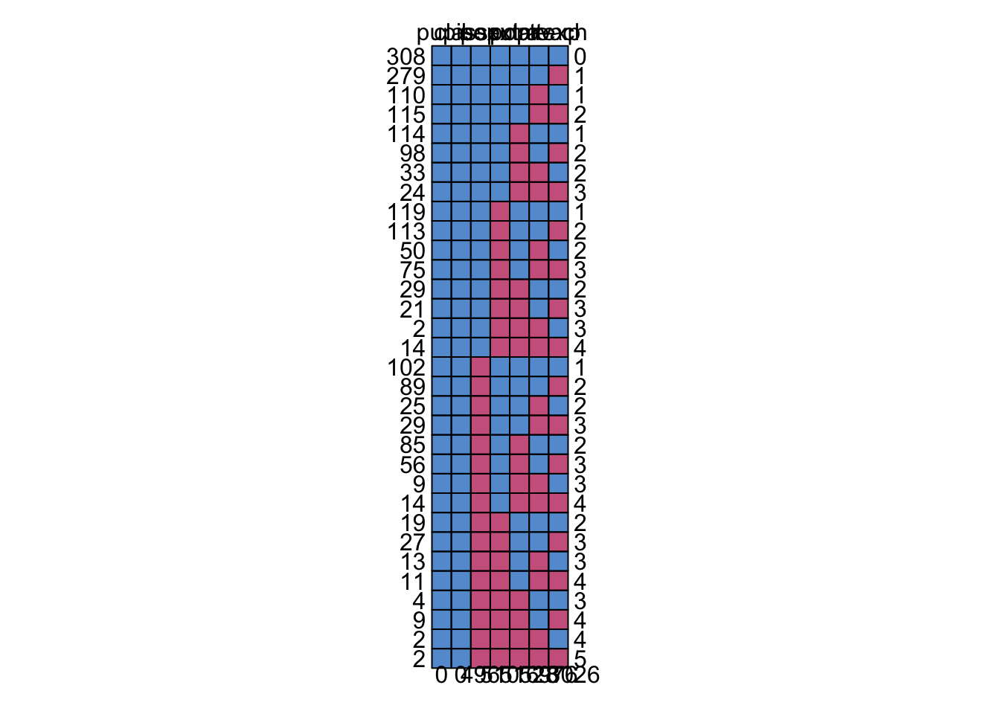
pupil class sex popular extrav popteach texp
308 1 1 1 1 1 1 1 0
279 1 1 1 1 1 1 0 1
110 1 1 1 1 1 0 1 1
115 1 1 1 1 1 0 0 2
114 1 1 1 1 0 1 1 1
98 1 1 1 1 0 1 0 2
33 1 1 1 1 0 0 1 2
24 1 1 1 1 0 0 0 3
119 1 1 1 0 1 1 1 1
113 1 1 1 0 1 1 0 2
50 1 1 1 0 1 0 1 2
75 1 1 1 0 1 0 0 3
29 1 1 1 0 0 1 1 2
21 1 1 1 0 0 1 0 3
2 1 1 1 0 0 0 1 3
14 1 1 1 0 0 0 0 4
102 1 1 0 1 1 1 1 1
89 1 1 0 1 1 1 0 2
25 1 1 0 1 1 0 1 2
29 1 1 0 1 1 0 0 3
85 1 1 0 1 0 1 1 2
56 1 1 0 1 0 1 0 3
9 1 1 0 1 0 0 1 3
14 1 1 0 1 0 0 0 4
19 1 1 0 0 1 1 1 2
27 1 1 0 0 1 1 0 3
13 1 1 0 0 1 0 1 3
11 1 1 0 0 1 0 0 4
4 1 1 0 0 0 1 1 3
9 1 1 0 0 0 1 0 4
2 1 1 0 0 0 0 1 4
2 1 1 0 0 0 0 0 5
0 0 496 510 516 528 976 3026There are 32 unique patterns. The pattern where everything is observed and the pattern where only texp is missing occur most frequently.
If we omit texp, then the following pattern matrix is realized:
md.pattern(popNCR[ , -5])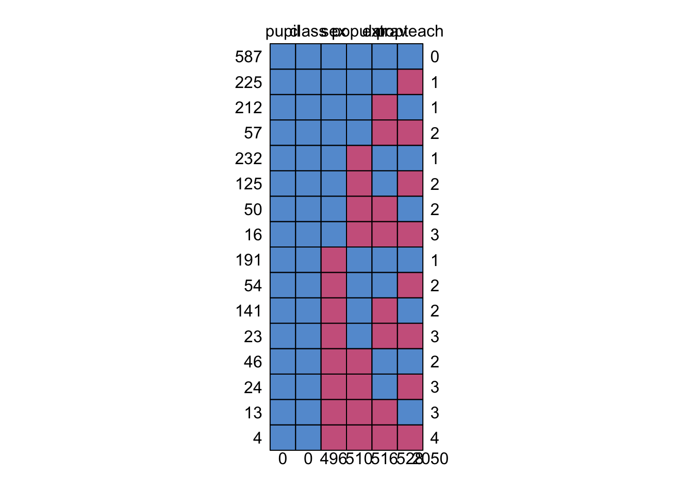
pupil class sex popular extrav popteach
587 1 1 1 1 1 1 0
225 1 1 1 1 1 0 1
212 1 1 1 1 0 1 1
57 1 1 1 1 0 0 2
232 1 1 1 0 1 1 1
125 1 1 1 0 1 0 2
50 1 1 1 0 0 1 2
16 1 1 1 0 0 0 3
191 1 1 0 1 1 1 1
54 1 1 0 1 1 0 2
141 1 1 0 1 0 1 2
23 1 1 0 1 0 0 3
46 1 1 0 0 1 1 2
24 1 1 0 0 1 0 3
13 1 1 0 0 0 1 3
4 1 1 0 0 0 0 4
0 0 496 510 516 528 2050Without texp, there are only 16 patterns.
4. Let’s focus more precisely on the missing data patterns. Does the missing data of popular depend on popteach? One could for example check this by making a histogram of popteach separately for the pupils with known popularity and missing popularity.
In R the missingness indicator
is.na(popNCR$popular) [1] FALSE FALSE FALSE FALSE TRUE FALSE FALSE TRUE TRUE FALSE FALSE FALSE
[13] FALSE TRUE FALSE FALSE FALSE FALSE FALSE FALSE TRUE FALSE FALSE FALSE
[25] FALSE TRUE TRUE FALSE FALSE FALSE FALSE FALSE FALSE FALSE FALSE FALSE
[37] TRUE FALSE FALSE FALSE FALSE TRUE FALSE FALSE FALSE FALSE FALSE FALSE
[49] FALSE FALSE TRUE FALSE FALSE FALSE FALSE FALSE FALSE FALSE FALSE FALSE
[61] FALSE FALSE FALSE TRUE TRUE TRUE FALSE FALSE FALSE TRUE FALSE FALSE
[73] FALSE TRUE TRUE FALSE FALSE FALSE FALSE TRUE TRUE FALSE FALSE FALSE
[85] FALSE FALSE TRUE FALSE FALSE FALSE TRUE TRUE FALSE FALSE FALSE FALSE
[97] FALSE FALSE TRUE FALSE TRUE FALSE TRUE FALSE FALSE FALSE FALSE FALSE
[109] FALSE FALSE FALSE FALSE FALSE TRUE TRUE TRUE FALSE FALSE FALSE TRUE
[121] FALSE TRUE FALSE FALSE FALSE FALSE FALSE FALSE FALSE FALSE FALSE FALSE
[133] TRUE FALSE FALSE FALSE FALSE FALSE FALSE FALSE FALSE FALSE TRUE FALSE
[145] FALSE FALSE FALSE FALSE FALSE FALSE FALSE FALSE FALSE FALSE FALSE FALSE
[157] TRUE FALSE FALSE FALSE FALSE FALSE FALSE FALSE FALSE FALSE FALSE FALSE
[169] TRUE FALSE FALSE FALSE FALSE FALSE FALSE TRUE FALSE FALSE FALSE FALSE
[181] FALSE TRUE FALSE FALSE TRUE FALSE FALSE FALSE FALSE FALSE FALSE FALSE
[193] TRUE TRUE TRUE FALSE FALSE FALSE FALSE FALSE TRUE FALSE TRUE FALSE
[205] FALSE FALSE TRUE FALSE FALSE FALSE TRUE FALSE FALSE FALSE TRUE FALSE
[217] TRUE FALSE FALSE FALSE FALSE FALSE FALSE FALSE FALSE FALSE FALSE FALSE
[229] FALSE FALSE FALSE FALSE TRUE FALSE FALSE FALSE FALSE FALSE FALSE FALSE
[241] FALSE FALSE FALSE FALSE TRUE FALSE FALSE FALSE FALSE FALSE TRUE TRUE
[253] TRUE FALSE FALSE FALSE TRUE FALSE FALSE FALSE TRUE FALSE FALSE TRUE
[265] FALSE FALSE FALSE FALSE FALSE FALSE FALSE FALSE FALSE FALSE FALSE TRUE
[277] TRUE TRUE FALSE FALSE FALSE FALSE FALSE FALSE FALSE FALSE FALSE TRUE
[289] FALSE FALSE FALSE FALSE TRUE TRUE FALSE TRUE FALSE TRUE FALSE TRUE
[301] TRUE TRUE FALSE FALSE FALSE FALSE FALSE FALSE TRUE FALSE FALSE FALSE
[313] FALSE FALSE FALSE FALSE FALSE TRUE FALSE FALSE FALSE FALSE FALSE FALSE
[325] FALSE FALSE FALSE TRUE FALSE FALSE TRUE FALSE TRUE TRUE FALSE FALSE
[337] FALSE FALSE FALSE TRUE TRUE FALSE FALSE FALSE FALSE FALSE FALSE FALSE
[349] FALSE FALSE TRUE TRUE FALSE TRUE FALSE FALSE FALSE TRUE TRUE FALSE
[361] FALSE FALSE FALSE TRUE FALSE TRUE TRUE TRUE FALSE FALSE FALSE TRUE
[373] FALSE FALSE TRUE FALSE FALSE FALSE FALSE FALSE FALSE TRUE FALSE FALSE
[385] FALSE FALSE FALSE TRUE FALSE FALSE FALSE FALSE FALSE TRUE FALSE FALSE
[397] FALSE FALSE FALSE TRUE FALSE FALSE TRUE FALSE FALSE FALSE FALSE FALSE
[409] FALSE TRUE FALSE TRUE FALSE FALSE FALSE FALSE FALSE FALSE FALSE FALSE
[421] FALSE TRUE FALSE FALSE FALSE TRUE FALSE TRUE TRUE FALSE TRUE FALSE
[433] FALSE FALSE FALSE FALSE FALSE FALSE TRUE FALSE FALSE FALSE TRUE FALSE
[445] FALSE FALSE TRUE TRUE TRUE TRUE TRUE TRUE TRUE TRUE FALSE TRUE
[457] TRUE FALSE FALSE TRUE FALSE FALSE TRUE FALSE FALSE FALSE TRUE FALSE
[469] FALSE FALSE FALSE FALSE TRUE FALSE TRUE FALSE FALSE FALSE FALSE FALSE
[481] FALSE TRUE TRUE TRUE FALSE FALSE FALSE FALSE FALSE FALSE FALSE FALSE
[493] FALSE FALSE FALSE FALSE TRUE TRUE FALSE TRUE FALSE FALSE FALSE FALSE
[505] FALSE FALSE FALSE FALSE FALSE FALSE FALSE FALSE TRUE FALSE TRUE TRUE
[517] FALSE FALSE TRUE FALSE FALSE TRUE FALSE FALSE TRUE FALSE FALSE FALSE
[529] FALSE FALSE FALSE FALSE TRUE FALSE FALSE FALSE FALSE FALSE FALSE FALSE
[541] FALSE FALSE FALSE FALSE FALSE TRUE FALSE FALSE FALSE FALSE FALSE TRUE
[553] FALSE FALSE TRUE FALSE FALSE FALSE FALSE TRUE FALSE FALSE FALSE FALSE
[565] TRUE TRUE FALSE FALSE FALSE FALSE FALSE TRUE TRUE FALSE FALSE TRUE
[577] FALSE FALSE FALSE FALSE TRUE FALSE TRUE FALSE TRUE FALSE FALSE FALSE
[589] TRUE FALSE TRUE FALSE TRUE FALSE FALSE FALSE FALSE TRUE FALSE FALSE
[601] FALSE TRUE FALSE FALSE FALSE FALSE FALSE FALSE FALSE FALSE TRUE TRUE
[613] FALSE TRUE FALSE FALSE FALSE FALSE FALSE FALSE FALSE FALSE FALSE FALSE
[625] FALSE FALSE FALSE TRUE FALSE FALSE TRUE FALSE FALSE FALSE FALSE FALSE
[637] FALSE FALSE TRUE FALSE FALSE FALSE FALSE TRUE FALSE TRUE FALSE FALSE
[649] TRUE FALSE FALSE TRUE FALSE TRUE FALSE TRUE FALSE FALSE TRUE TRUE
[661] TRUE TRUE FALSE TRUE TRUE TRUE FALSE FALSE TRUE TRUE TRUE FALSE
[673] FALSE FALSE FALSE FALSE FALSE FALSE FALSE FALSE FALSE FALSE TRUE FALSE
[685] TRUE FALSE FALSE TRUE FALSE FALSE FALSE FALSE FALSE FALSE TRUE TRUE
[697] TRUE TRUE TRUE TRUE FALSE FALSE FALSE FALSE TRUE FALSE TRUE FALSE
[709] TRUE TRUE FALSE FALSE FALSE FALSE FALSE FALSE FALSE FALSE TRUE FALSE
[721] FALSE TRUE TRUE FALSE FALSE FALSE TRUE FALSE TRUE FALSE TRUE FALSE
[733] FALSE FALSE FALSE FALSE FALSE TRUE TRUE TRUE FALSE FALSE TRUE FALSE
[745] FALSE FALSE TRUE FALSE FALSE TRUE FALSE FALSE FALSE FALSE FALSE FALSE
[757] FALSE FALSE FALSE FALSE FALSE FALSE TRUE FALSE TRUE FALSE TRUE FALSE
[769] FALSE FALSE FALSE FALSE FALSE FALSE TRUE FALSE FALSE FALSE FALSE TRUE
[781] FALSE FALSE FALSE FALSE FALSE FALSE FALSE TRUE FALSE TRUE FALSE TRUE
[793] TRUE TRUE FALSE TRUE FALSE FALSE TRUE FALSE FALSE FALSE TRUE FALSE
[805] FALSE FALSE FALSE FALSE FALSE FALSE FALSE TRUE FALSE FALSE FALSE FALSE
[817] FALSE FALSE TRUE FALSE FALSE FALSE FALSE TRUE FALSE FALSE FALSE FALSE
[829] FALSE FALSE FALSE TRUE FALSE FALSE FALSE FALSE FALSE FALSE FALSE FALSE
[841] TRUE FALSE FALSE FALSE TRUE FALSE FALSE TRUE FALSE FALSE FALSE FALSE
[853] FALSE TRUE FALSE TRUE FALSE TRUE TRUE FALSE FALSE FALSE TRUE FALSE
[865] FALSE FALSE FALSE FALSE FALSE FALSE FALSE FALSE FALSE FALSE TRUE TRUE
[877] FALSE FALSE FALSE FALSE FALSE FALSE FALSE FALSE FALSE FALSE FALSE TRUE
[889] TRUE TRUE TRUE FALSE FALSE FALSE FALSE FALSE FALSE FALSE FALSE FALSE
[901] TRUE FALSE FALSE FALSE FALSE FALSE TRUE FALSE FALSE FALSE TRUE TRUE
[913] FALSE FALSE FALSE TRUE FALSE TRUE FALSE FALSE FALSE FALSE FALSE FALSE
[925] FALSE FALSE TRUE FALSE TRUE TRUE TRUE FALSE TRUE FALSE FALSE TRUE
[937] FALSE FALSE TRUE TRUE FALSE TRUE FALSE FALSE FALSE FALSE FALSE FALSE
[949] FALSE TRUE FALSE TRUE TRUE FALSE TRUE FALSE FALSE FALSE FALSE FALSE
[961] FALSE TRUE FALSE FALSE FALSE FALSE FALSE TRUE FALSE FALSE FALSE FALSE
[973] FALSE FALSE FALSE FALSE FALSE TRUE FALSE TRUE FALSE FALSE FALSE TRUE
[985] FALSE TRUE TRUE FALSE FALSE FALSE FALSE FALSE TRUE FALSE FALSE FALSE
[997] TRUE TRUE FALSE TRUE FALSE TRUE FALSE TRUE FALSE FALSE FALSE FALSE
[1009] FALSE FALSE FALSE FALSE FALSE FALSE FALSE FALSE FALSE FALSE FALSE FALSE
[1021] FALSE FALSE FALSE FALSE FALSE FALSE FALSE FALSE FALSE FALSE TRUE FALSE
[1033] FALSE FALSE FALSE FALSE TRUE TRUE FALSE FALSE FALSE TRUE FALSE FALSE
[1045] TRUE TRUE FALSE TRUE TRUE FALSE TRUE TRUE FALSE FALSE TRUE FALSE
[1057] FALSE TRUE FALSE TRUE FALSE FALSE TRUE FALSE FALSE FALSE FALSE FALSE
[1069] FALSE TRUE FALSE FALSE FALSE FALSE FALSE FALSE FALSE FALSE TRUE FALSE
[1081] TRUE FALSE FALSE FALSE FALSE FALSE FALSE FALSE FALSE FALSE FALSE FALSE
[1093] FALSE FALSE FALSE FALSE FALSE TRUE TRUE FALSE FALSE FALSE FALSE FALSE
[1105] FALSE FALSE FALSE FALSE FALSE TRUE FALSE FALSE FALSE FALSE TRUE FALSE
[1117] FALSE FALSE FALSE FALSE FALSE FALSE FALSE FALSE FALSE FALSE FALSE TRUE
[1129] FALSE FALSE FALSE FALSE FALSE FALSE FALSE FALSE FALSE FALSE FALSE FALSE
[1141] FALSE FALSE TRUE FALSE FALSE TRUE FALSE TRUE TRUE TRUE FALSE FALSE
[1153] FALSE FALSE TRUE FALSE FALSE FALSE TRUE FALSE FALSE FALSE FALSE FALSE
[1165] FALSE FALSE FALSE FALSE FALSE FALSE FALSE FALSE TRUE FALSE TRUE FALSE
[1177] FALSE FALSE TRUE FALSE FALSE TRUE FALSE FALSE FALSE FALSE FALSE FALSE
[1189] FALSE FALSE FALSE TRUE FALSE FALSE FALSE FALSE FALSE FALSE FALSE FALSE
[1201] TRUE FALSE FALSE FALSE FALSE FALSE FALSE FALSE TRUE FALSE TRUE TRUE
[1213] FALSE FALSE FALSE TRUE FALSE FALSE FALSE TRUE FALSE FALSE FALSE FALSE
[1225] FALSE FALSE FALSE FALSE FALSE FALSE FALSE FALSE TRUE FALSE FALSE TRUE
[1237] FALSE FALSE FALSE FALSE FALSE FALSE FALSE FALSE FALSE FALSE TRUE FALSE
[1249] FALSE FALSE FALSE TRUE TRUE FALSE FALSE FALSE FALSE FALSE TRUE FALSE
[1261] FALSE FALSE FALSE TRUE TRUE TRUE TRUE TRUE TRUE TRUE TRUE FALSE
[1273] TRUE FALSE FALSE TRUE TRUE TRUE FALSE TRUE FALSE FALSE TRUE FALSE
[1285] FALSE TRUE TRUE FALSE FALSE FALSE FALSE TRUE FALSE TRUE FALSE FALSE
[1297] FALSE FALSE FALSE TRUE TRUE FALSE TRUE TRUE FALSE TRUE FALSE FALSE
[1309] FALSE TRUE TRUE FALSE FALSE FALSE FALSE TRUE FALSE TRUE FALSE FALSE
[1321] FALSE TRUE FALSE FALSE FALSE TRUE TRUE FALSE FALSE FALSE FALSE TRUE
[1333] TRUE TRUE FALSE TRUE FALSE TRUE FALSE FALSE TRUE TRUE TRUE TRUE
[1345] FALSE TRUE TRUE FALSE FALSE FALSE FALSE FALSE FALSE TRUE FALSE FALSE
[1357] FALSE TRUE TRUE TRUE FALSE TRUE FALSE FALSE FALSE FALSE FALSE FALSE
[1369] FALSE TRUE FALSE FALSE FALSE FALSE FALSE TRUE TRUE FALSE TRUE FALSE
[1381] FALSE FALSE TRUE TRUE TRUE TRUE FALSE FALSE FALSE FALSE TRUE FALSE
[1393] FALSE TRUE FALSE FALSE TRUE TRUE FALSE FALSE FALSE TRUE FALSE FALSE
[1405] TRUE FALSE FALSE FALSE FALSE TRUE FALSE TRUE TRUE TRUE FALSE FALSE
[1417] FALSE FALSE FALSE FALSE FALSE FALSE FALSE FALSE FALSE TRUE TRUE FALSE
[1429] TRUE FALSE FALSE FALSE TRUE FALSE FALSE FALSE FALSE FALSE TRUE FALSE
[1441] TRUE FALSE TRUE FALSE TRUE TRUE FALSE FALSE FALSE FALSE FALSE FALSE
[1453] TRUE FALSE FALSE FALSE FALSE FALSE FALSE FALSE FALSE TRUE FALSE FALSE
[1465] FALSE FALSE TRUE TRUE TRUE FALSE FALSE FALSE FALSE TRUE TRUE FALSE
[1477] TRUE FALSE TRUE TRUE TRUE FALSE FALSE TRUE FALSE FALSE FALSE FALSE
[1489] FALSE TRUE FALSE TRUE FALSE TRUE FALSE FALSE FALSE FALSE FALSE FALSE
[1501] TRUE TRUE TRUE FALSE FALSE TRUE FALSE FALSE FALSE FALSE FALSE FALSE
[1513] FALSE TRUE TRUE FALSE FALSE FALSE FALSE TRUE FALSE FALSE TRUE FALSE
[1525] FALSE FALSE FALSE FALSE FALSE FALSE FALSE FALSE FALSE FALSE FALSE TRUE
[1537] TRUE FALSE FALSE FALSE FALSE FALSE FALSE FALSE FALSE FALSE FALSE FALSE
[1549] TRUE TRUE FALSE FALSE TRUE TRUE TRUE TRUE FALSE FALSE FALSE TRUE
[1561] FALSE TRUE FALSE FALSE TRUE FALSE FALSE FALSE TRUE FALSE FALSE TRUE
[1573] FALSE TRUE FALSE FALSE FALSE FALSE TRUE FALSE FALSE FALSE FALSE FALSE
[1585] FALSE FALSE FALSE FALSE FALSE FALSE FALSE TRUE FALSE FALSE FALSE FALSE
[1597] FALSE FALSE FALSE FALSE FALSE FALSE FALSE FALSE FALSE TRUE FALSE FALSE
[1609] FALSE TRUE TRUE FALSE FALSE FALSE FALSE FALSE FALSE FALSE FALSE FALSE
[1621] FALSE FALSE FALSE FALSE FALSE FALSE FALSE FALSE FALSE FALSE TRUE FALSE
[1633] FALSE FALSE FALSE FALSE FALSE FALSE FALSE FALSE FALSE FALSE FALSE FALSE
[1645] FALSE TRUE TRUE FALSE FALSE TRUE TRUE TRUE FALSE FALSE TRUE TRUE
[1657] FALSE TRUE FALSE TRUE FALSE TRUE TRUE FALSE TRUE TRUE TRUE FALSE
[1669] TRUE FALSE TRUE TRUE FALSE TRUE FALSE FALSE TRUE TRUE TRUE FALSE
[1681] FALSE FALSE TRUE TRUE FALSE TRUE TRUE FALSE FALSE TRUE FALSE FALSE
[1693] FALSE FALSE FALSE FALSE FALSE FALSE FALSE FALSE FALSE TRUE TRUE FALSE
[1705] FALSE TRUE FALSE FALSE FALSE TRUE TRUE TRUE FALSE FALSE FALSE FALSE
[1717] FALSE FALSE FALSE TRUE TRUE FALSE TRUE FALSE TRUE FALSE FALSE FALSE
[1729] FALSE TRUE FALSE FALSE FALSE FALSE FALSE FALSE FALSE FALSE FALSE FALSE
[1741] FALSE FALSE FALSE TRUE FALSE FALSE FALSE FALSE FALSE FALSE FALSE TRUE
[1753] FALSE FALSE FALSE TRUE FALSE FALSE FALSE FALSE FALSE FALSE TRUE FALSE
[1765] FALSE FALSE TRUE FALSE FALSE FALSE FALSE TRUE FALSE FALSE FALSE FALSE
[1777] FALSE FALSE TRUE TRUE FALSE FALSE FALSE FALSE TRUE FALSE TRUE TRUE
[1789] TRUE FALSE FALSE TRUE FALSE TRUE TRUE FALSE FALSE FALSE TRUE TRUE
[1801] TRUE FALSE FALSE FALSE FALSE FALSE FALSE FALSE FALSE TRUE FALSE FALSE
[1813] FALSE FALSE FALSE FALSE TRUE FALSE FALSE FALSE TRUE FALSE FALSE FALSE
[1825] FALSE FALSE FALSE FALSE TRUE FALSE FALSE FALSE FALSE FALSE FALSE FALSE
[1837] FALSE FALSE FALSE FALSE FALSE FALSE FALSE TRUE FALSE FALSE FALSE TRUE
[1849] FALSE FALSE FALSE TRUE FALSE FALSE TRUE FALSE FALSE FALSE FALSE FALSE
[1861] FALSE FALSE TRUE FALSE FALSE FALSE FALSE FALSE FALSE FALSE FALSE FALSE
[1873] FALSE FALSE FALSE FALSE FALSE FALSE FALSE FALSE FALSE FALSE FALSE FALSE
[1885] FALSE TRUE FALSE FALSE TRUE TRUE FALSE FALSE TRUE FALSE TRUE TRUE
[1897] FALSE FALSE FALSE FALSE FALSE FALSE FALSE TRUE TRUE TRUE TRUE FALSE
[1909] FALSE FALSE FALSE FALSE TRUE FALSE TRUE TRUE FALSE FALSE FALSE FALSE
[1921] TRUE FALSE FALSE FALSE FALSE FALSE FALSE FALSE FALSE FALSE FALSE FALSE
[1933] TRUE FALSE FALSE FALSE TRUE FALSE TRUE FALSE FALSE FALSE FALSE FALSE
[1945] FALSE FALSE TRUE TRUE TRUE FALSE FALSE TRUE TRUE FALSE FALSE TRUE
[1957] FALSE TRUE FALSE TRUE FALSE FALSE FALSE FALSE TRUE FALSE TRUE FALSE
[1969] FALSE FALSE TRUE FALSE FALSE FALSE FALSE FALSE FALSE TRUE FALSE FALSE
[1981] FALSE FALSE FALSE FALSE FALSE FALSE FALSE FALSE FALSE FALSE FALSE TRUE
[1993] FALSE FALSE FALSE TRUE FALSE TRUE FALSE FALSEis a dummy variable of the same length as popular with value 0 (FALSE) for observed pupil popularity and 1 (TRUE) for missing pupil popularity. A histogram can be made with the function histogram(). The code for a conditional histogram of popteach given the missingness indicator for popular is
histogram(~ popteach | is.na(popular), data=popNCR)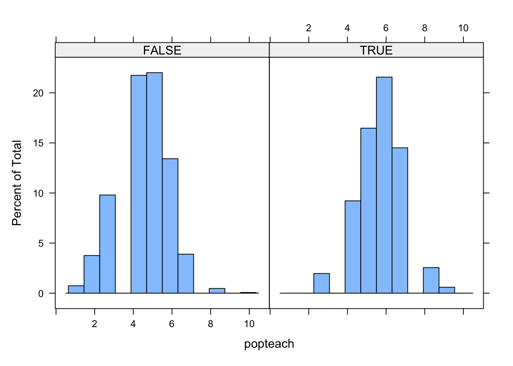
We do see that the histogram for the missing popular (TRUE) is further to the right than the histogram for observed popular (FALSE). This would indicate a right-tailed MAR missingness. In fact this is exactly what happens, because we created the missingness in these data ourselves. But we can make it observable by examining the relations between the missingness in popular and the observed data in popteach.
5. Does the missingness of the other incomplete variables depend on popteach? If yes, what is the direction of the relation?
histogram(~ popteach | is.na(sex), data = popNCR) 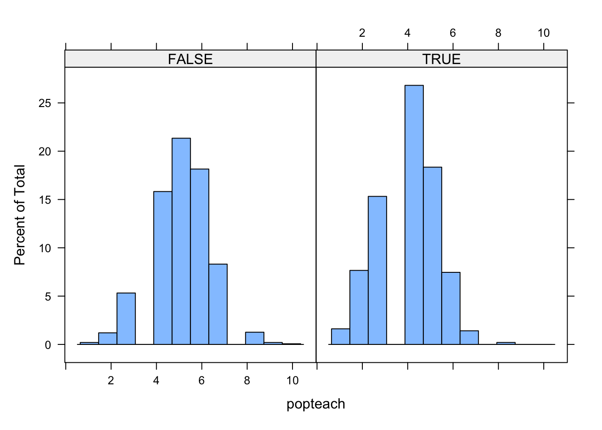
There seems to be a left-tailed relation between popteach and the missingness in sex.
histogram(~ popteach | is.na(extrav), data = popNCR)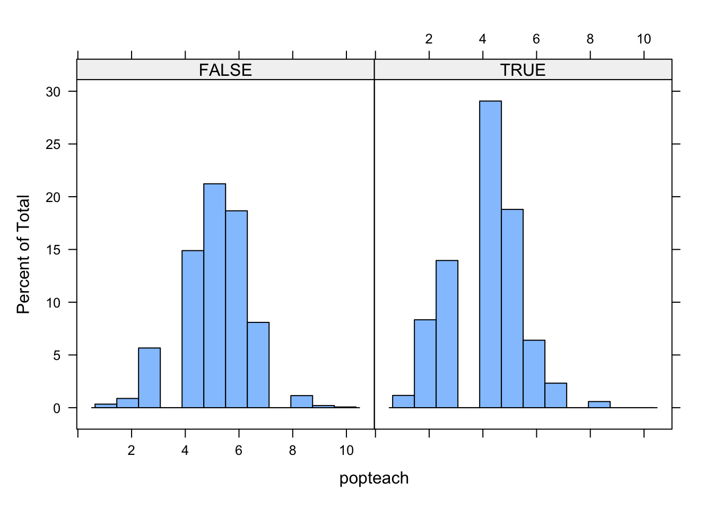
There also seems to be a left-tailed relation between popteach and the missingness in extrav.
histogram(~ popteach | is.na(texp), data = popNCR)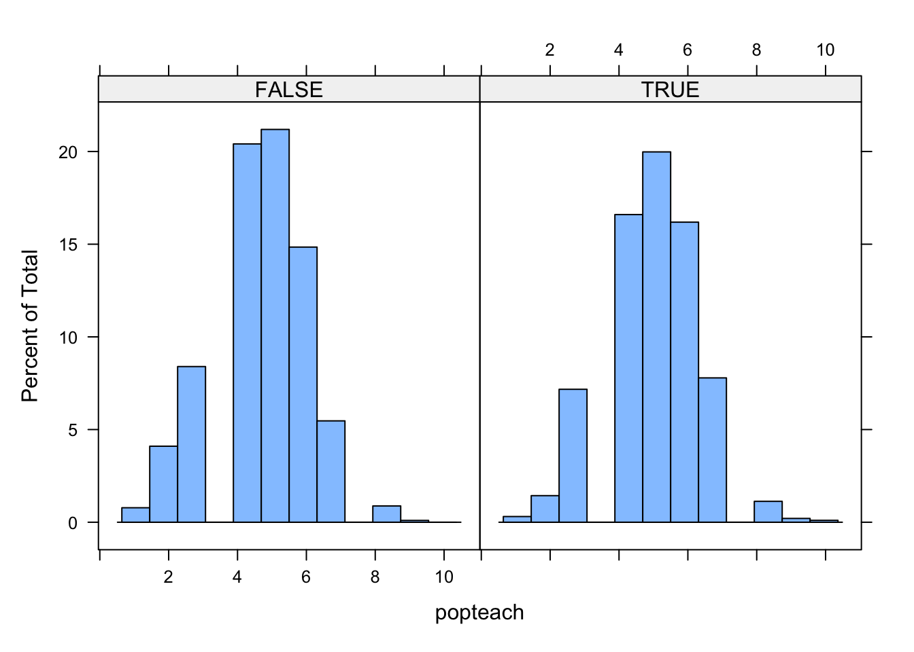
There seems to be no observable relation between popteach and the missingness in texp. It might be MCAR or even MNAR.
6. Find out if the missingness in teacher popularity depends on pupil popularity.
histogram(~ popular | is.na(popteach), data = popNCR)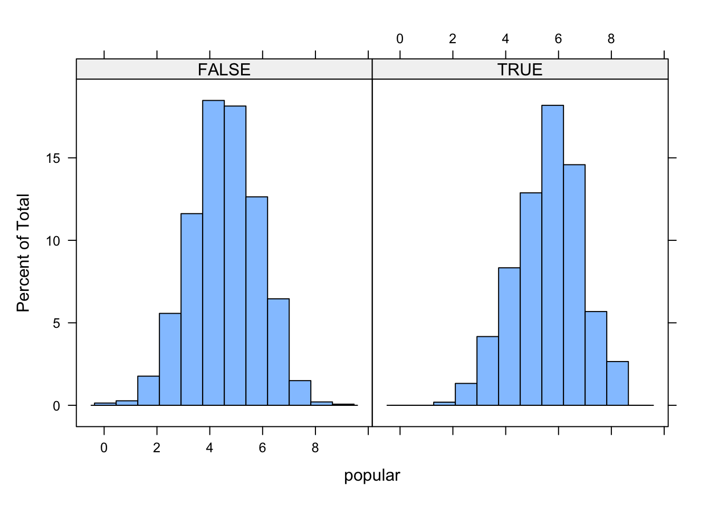
Yes: there is a dependency. The relation seems to be right-tailed.
7. Have a look at the intraclass correlation (ICC) for the incomplete variables popular, popteach and texp.
icc(aov(popular ~ as.factor(class), data = popNCR))[1] 0.328007icc(aov(popteach ~ class, data = popNCR))[1] 0.3138658icc(aov(texp ~ class, data = popNCR))[1] 1Please note that the function icc() comes from the package multilevel (function ICC1()), but is included in the workspace popular.RData. Write down the ICCs, you’ll need them later.
7b. Do you think it is necessary to take the multilevel structure into account?
YES! There is a strong cluster structure going on. If we ignore the clustering in our imputation model, we may run into invalid inference. To stay as close to the true data model, we must take the cluster structure into account during imputation.
8. Impute the popNCR dataset with mice using imputation method norm for popular, popteach, texp and extrav. Exclude class as a predictor for all variables. Call the mids-object imp1.
ini <- mice(popNCR, maxit = 0)
meth <- ini$meth
meth pupil class extrav sex texp popular popteach
"" "" "pmm" "logreg" "pmm" "pmm" "pmm" meth[c(3, 5, 6, 7)] <- "norm"
meth pupil class extrav sex texp popular popteach
"" "" "norm" "logreg" "norm" "norm" "norm" pred <- ini$pred
pred pupil class extrav sex texp popular popteach
pupil 0 1 1 1 1 1 1
class 1 0 1 1 1 1 1
extrav 1 1 0 1 1 1 1
sex 1 1 1 0 1 1 1
texp 1 1 1 1 0 1 1
popular 1 1 1 1 1 0 1
popteach 1 1 1 1 1 1 0pred[, "class"] <- 0
pred[, "pupil"] <- 0
pred pupil class extrav sex texp popular popteach
pupil 0 0 1 1 1 1 1
class 0 0 1 1 1 1 1
extrav 0 0 0 1 1 1 1
sex 0 0 1 0 1 1 1
texp 0 0 1 1 0 1 1
popular 0 0 1 1 1 0 1
popteach 0 0 1 1 1 1 0imp1 <- mice(popNCR, meth = meth, pred = pred, print = FALSE)9. Compare the means of the variables in the first imputed dataset and in the incomplete dataset.
summary(complete(imp1)) pupil class extrav sex texp
Min. : 1.00 17 : 26 Min. : 1.000 0: 985 Min. :-6.465
1st Qu.: 6.00 63 : 25 1st Qu.: 4.139 1:1015 1st Qu.: 8.000
Median :11.00 10 : 24 Median : 5.000 Median :12.253
Mean :10.65 15 : 24 Mean : 5.269 Mean :12.509
3rd Qu.:16.00 4 : 23 3rd Qu.: 6.000 3rd Qu.:16.698
Max. :26.00 21 : 23 Max. :10.000 Max. :35.745
(Other):1855
popular popteach
Min. : 0.000 Min. : 1.000
1st Qu.: 4.100 1st Qu.: 4.000
Median : 5.000 Median : 5.000
Mean : 5.006 Mean : 5.021
3rd Qu.: 5.971 3rd Qu.: 6.000
Max. :10.547 Max. :10.000
summary(popNCR) pupil class extrav sex texp
Min. : 1.00 17 : 26 Min. : 1.000 0 :661 Min. : 2.0
1st Qu.: 6.00 63 : 25 1st Qu.: 4.000 1 :843 1st Qu.: 7.0
Median :11.00 10 : 24 Median : 5.000 NA's:496 Median :12.0
Mean :10.65 15 : 24 Mean : 5.313 Mean :11.8
3rd Qu.:16.00 4 : 23 3rd Qu.: 6.000 3rd Qu.:16.0
Max. :26.00 21 : 23 Max. :10.000 Max. :25.0
(Other):1855 NA's :516 NA's :976
popular popteach
Min. :0.000 Min. : 1.000
1st Qu.:3.900 1st Qu.: 4.000
Median :4.800 Median : 5.000
Mean :4.829 Mean : 4.834
3rd Qu.:5.800 3rd Qu.: 6.000
Max. :9.100 Max. :10.000
NA's :510 NA's :528 9b. The missingness in texp is MNAR: higher values for texp have a larger probability to be missing. Can you see this in the imputed data? Do you think this is a problem?
Yes, we can see this in the imputed data: teacher experience increases slightly after imputation. However, texp is the same for all pupils in a class. But not all pupils have this information recorded (as if some pupils did not remember, or were not present during data collection). This is not a problem, because as long as at least one pupil in each class has teacher experience recorded, we can deductively impute the correct (i.e. true) value for every pupil in the class.
10. Compare the ICCs of the variables in the first imputed dataset with those in the incomplete dataset (use popular, popteach and texp). Make a notation of the ICCs after imputation.
data.frame(vars = names(popNCR[c(6, 7, 5)]),
observed = c(icc(aov(popular ~ class, popNCR)),
icc(aov(popteach ~ class, popNCR)),
icc(aov(texp ~ class, popNCR))),
norm = c(icc(aov(popular ~ class, complete(imp1))),
icc(aov(popteach ~ class, complete(imp1))),
icc(aov(texp ~ class, complete(imp1))))) vars observed norm
1 popular 0.3280070 0.2798518
2 popteach 0.3138658 0.2639095
3 texp 1.0000000 0.459500411. Now impute the popNCR dataset again with mice using imputation method norm for popular, popteach, texp and extrav, but now include class as a predictor for all variables. Call the mids-object imp2.
pred <- ini$pred
pred[, "pupil"] <- 0
imp2 <- mice(popNCR, meth = meth, pred = pred, print = FALSE)Warning: Number of logged events: 9012. Compare the ICCs of the variables in the first imputed dataset from imp2 with those of imp1 and the incomplete dataset (use popular, popteach and texp). Make a notation of the ICCs after imputation.
data.frame(vars = names(popNCR[c(6, 7, 5)]),
observed = c(icc(aov(popular ~ class, popNCR)),
icc(aov(popteach ~ class, popNCR)),
icc(aov(texp ~ class, popNCR))),
norm = c(icc(aov(popular ~ class, complete(imp1))),
icc(aov(popteach ~ class, complete(imp1))),
icc(aov(texp ~ class, complete(imp1)))),
normclass = c(icc(aov(popular ~ class, complete(imp2))),
icc(aov(popteach ~ class, complete(imp2))),
icc(aov(texp ~ class, complete(imp2))))) vars observed norm normclass
1 popular 0.3280070 0.2798518 0.3629046
2 popteach 0.3138658 0.2639095 0.3326133
3 texp 1.0000000 0.4595004 1.0000000By simply forcing the algorithm to use the class variable during estimation we adopt a fixed effects approach. This conforms to formulating seperate regression models for each class and imputing within classes from these models.
Checking Convergence of the imputations
13. Inspect the trace lines for the variables popular, texp and extrav.
plot(imp2, c("popular", "texp", "popteach"))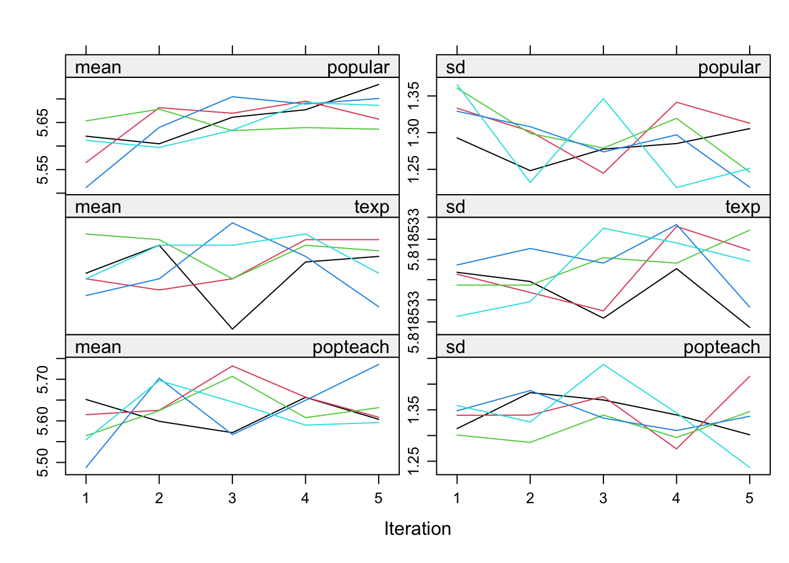
14. Add another 10 iterations and inspect the trace lines again. What do you observe with respect to the convergence of the sampler?
imp3 <- mice.mids(imp2, maxit = 10)
iter imp variable
6 1 extrav sex texp popular popteach
6 2 extrav sex texp popular popteach
6 3 extrav sex texp popular popteach
6 4 extrav sex texp popular popteach
6 5 extrav sex texp popular popteach
7 1 extrav sex texp popular popteach
7 2 extrav sex texp popular popteach
7 3 extrav sex texp popular popteach
7 4 extrav sex texp popular popteach
7 5 extrav sex texp popular popteach
8 1 extrav sex texp popular popteach
8 2 extrav sex texp popular popteach
8 3 extrav sex texp popular popteach
8 4 extrav sex texp popular popteach
8 5 extrav sex texp popular popteach
9 1 extrav sex texp popular popteach
9 2 extrav sex texp popular popteach
9 3 extrav sex texp popular popteach
9 4 extrav sex texp popular popteach
9 5 extrav sex texp popular popteach
10 1 extrav sex texp popular popteach
10 2 extrav sex texp popular popteach
10 3 extrav sex texp popular popteach
10 4 extrav sex texp popular popteach
10 5 extrav sex texp popular popteach
11 1 extrav sex texp popular popteach
11 2 extrav sex texp popular popteach
11 3 extrav sex texp popular popteach
11 4 extrav sex texp popular popteach
11 5 extrav sex texp popular popteach
12 1 extrav sex texp popular popteach
12 2 extrav sex texp popular popteach
12 3 extrav sex texp popular popteach
12 4 extrav sex texp popular popteach
12 5 extrav sex texp popular popteach
13 1 extrav sex texp popular popteach
13 2 extrav sex texp popular popteach
13 3 extrav sex texp popular popteach
13 4 extrav sex texp popular popteach
13 5 extrav sex texp popular popteach
14 1 extrav sex texp popular popteach
14 2 extrav sex texp popular popteach
14 3 extrav sex texp popular popteach
14 4 extrav sex texp popular popteach
14 5 extrav sex texp popular popteach
15 1 extrav sex texp popular popteach
15 2 extrav sex texp popular popteach
15 3 extrav sex texp popular popteach
15 4 extrav sex texp popular popteach
15 5 extrav sex texp popular popteachplot(imp3, c("popular", "texp", "popteach"))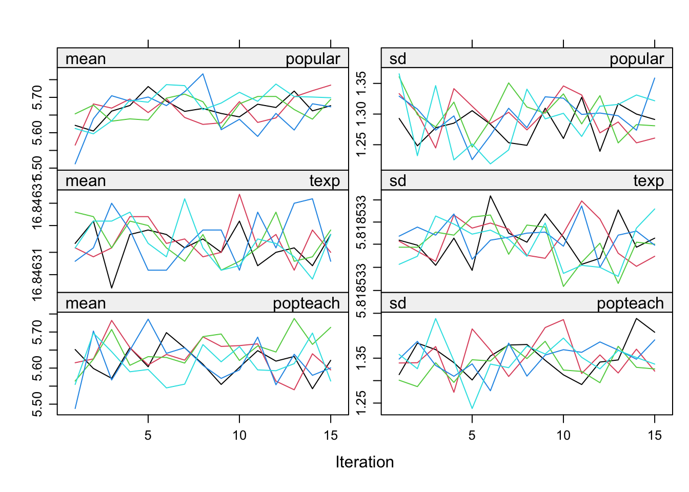
It seems OK. Adding another 20 iterations confirms this.
imp3b <- mice.mids(imp3, maxit = 20, print = FALSE)
plot(imp3b, c("popular", "texp", "popteach"))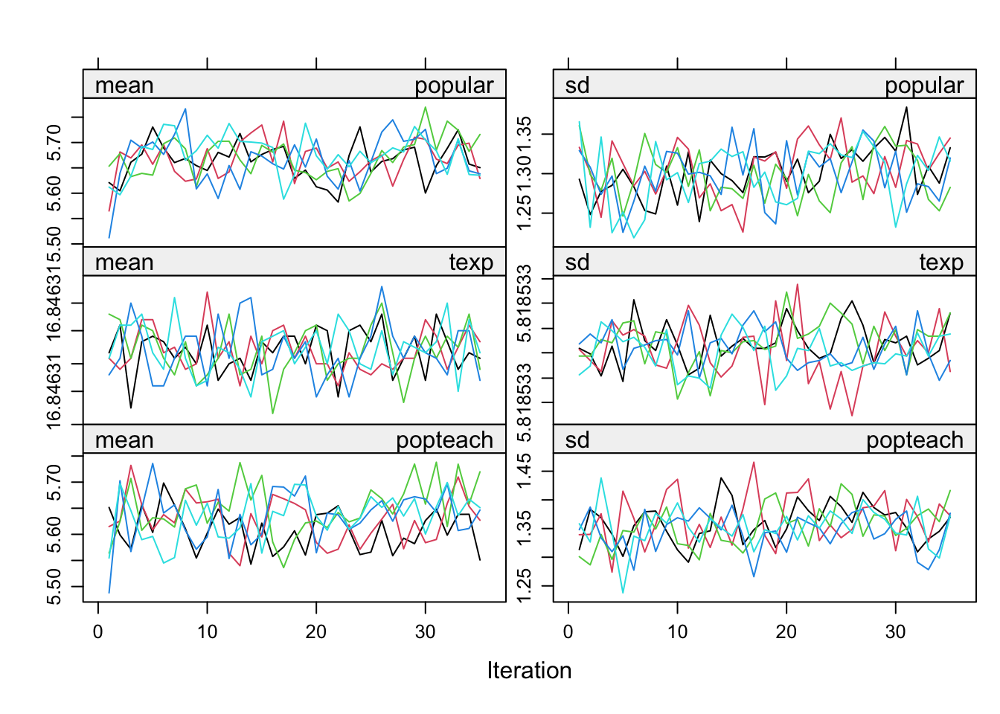
Further inspection
Several plotting methods based on the package lattice for Trellis graphics are implemented in mice for imputed data.
15. Plot the densities of the observed and imputed data (use imp2) with the function densityplot().
To obtain all densities of the different imputed datasets use
densityplot(imp2)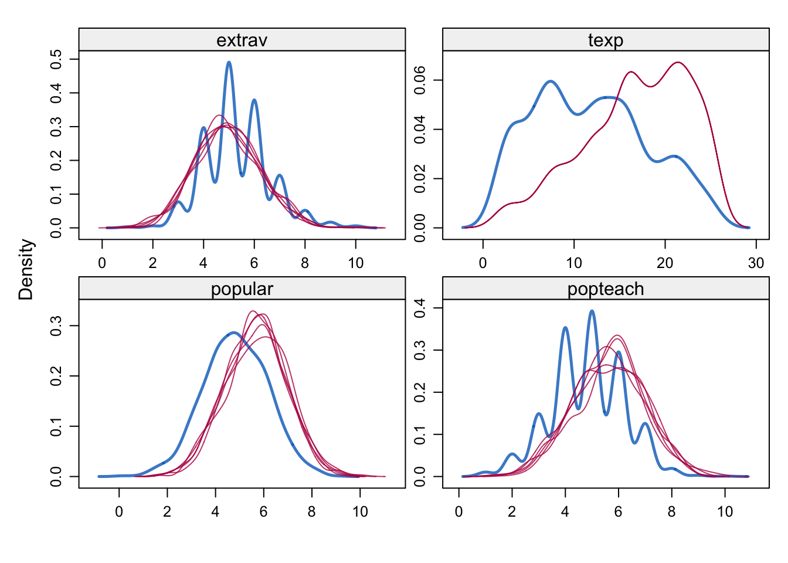
To obtain just the densities for popular one can use
densityplot(imp2, ~ popular)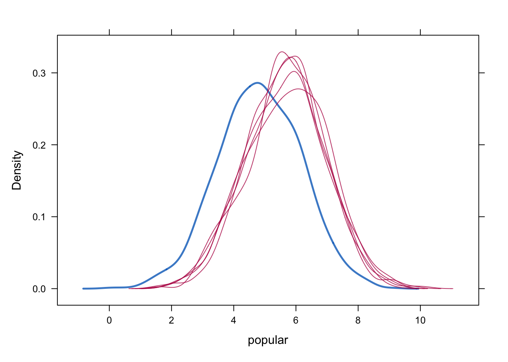
or
densityplot(imp2, ~ popular | .imp)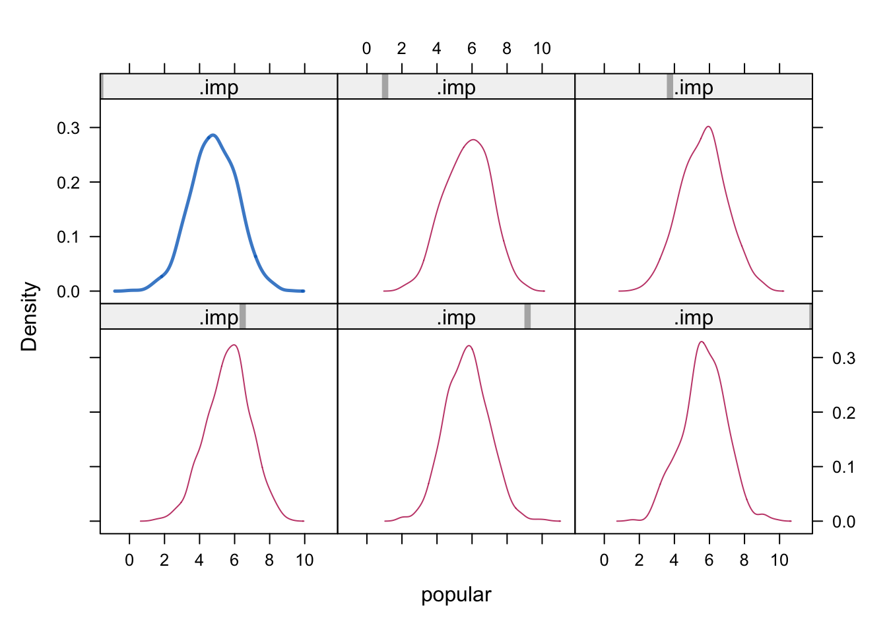
The latter case results in a conditional plot (conditional on the different imputed datasets).
16. Have a look at the imputed dataset by asking the first 15 rows of the first completed dataset for imp2. What do you think of the imputed values?
complete(imp2, 1)[1:15, ] pupil class extrav sex texp popular popteach
1 1 1 5.000000 1 24 6.300000 6.314991
2 2 1 3.616012 0 24 4.900000 4.343070
3 3 1 4.000000 1 24 5.300000 6.000000
4 4 1 3.000000 0 24 4.700000 5.000000
5 5 1 5.000000 1 24 5.656993 6.000000
6 6 1 3.564456 0 24 4.700000 5.000000
7 7 1 5.000000 0 24 5.900000 5.000000
8 8 1 4.000000 0 24 4.484762 4.389721
9 9 1 5.000000 0 24 4.686309 5.000000
10 10 1 5.000000 0 24 3.900000 3.000000
11 11 1 3.217854 1 24 5.700000 5.000000
12 12 1 5.000000 0 24 4.800000 5.000000
13 13 1 5.000000 0 24 5.000000 5.000000
14 14 1 5.000000 1 24 6.157194 6.000000
15 15 1 5.000000 1 24 6.000000 5.000000or, alternatively
head(complete(imp2, 1), n = 15) pupil class extrav sex texp popular popteach
1 1 1 5.000000 1 24 6.300000 6.314991
2 2 1 3.616012 0 24 4.900000 4.343070
3 3 1 4.000000 1 24 5.300000 6.000000
4 4 1 3.000000 0 24 4.700000 5.000000
5 5 1 5.000000 1 24 5.656993 6.000000
6 6 1 3.564456 0 24 4.700000 5.000000
7 7 1 5.000000 0 24 5.900000 5.000000
8 8 1 4.000000 0 24 4.484762 4.389721
9 9 1 5.000000 0 24 4.686309 5.000000
10 10 1 5.000000 0 24 3.900000 3.000000
11 11 1 3.217854 1 24 5.700000 5.000000
12 12 1 5.000000 0 24 4.800000 5.000000
13 13 1 5.000000 0 24 5.000000 5.000000
14 14 1 5.000000 1 24 6.157194 6.000000
15 15 1 5.000000 1 24 6.000000 5.00000017. Impute the popNCR data once more where you use predictive mean matching and include all variables as predictors. Name the object imp4.
imp4 <- mice(popNCR)
iter imp variable
1 1 extrav sex texp popular popteach
1 2 extrav sex texp popular popteach
1 3 extrav sex texp popular popteach
1 4 extrav sex texp popular popteach
1 5 extrav sex texp popular popteach
2 1 extrav sex texp popular popteach
2 2 extrav sex texp popular popteach
2 3 extrav sex texp popular popteach
2 4 extrav sex texp popular popteach
2 5 extrav sex texp popular popteach
3 1 extrav sex texp popular popteach
3 2 extrav sex texp popular popteach
3 3 extrav sex texp popular popteach
3 4 extrav sex texp popular popteach
3 5 extrav sex texp popular popteach
4 1 extrav sex texp popular popteach
4 2 extrav sex texp popular popteach
4 3 extrav sex texp popular popteach
4 4 extrav sex texp popular popteach
4 5 extrav sex texp popular popteach
5 1 extrav sex texp popular popteach
5 2 extrav sex texp popular popteach
5 3 extrav sex texp popular popteach
5 4 extrav sex texp popular popteach
5 5 extrav sex texp popular popteachWarning: Number of logged events: 9018. Plot again the densities of the observed and imputed data with the function densityplot(), but now use imp4. Is there a difference between the imputations obtained with pmm and norm and can you explain this?
densityplot(imp4)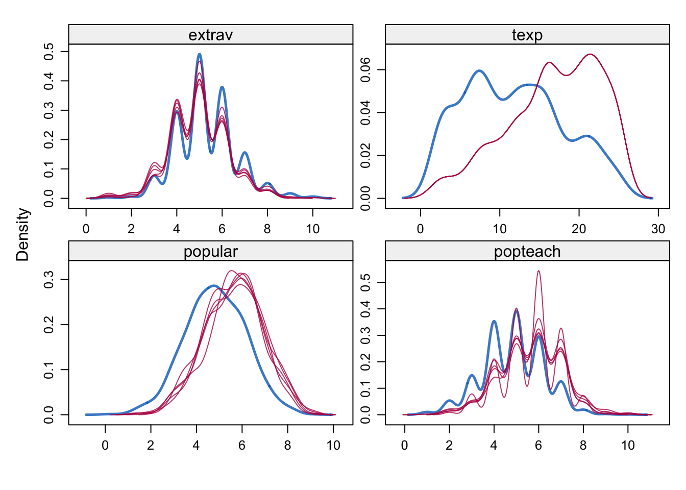
Yes, pmm samples from the observed values and this clearly shows: imputations follow the shape of the observed data.
19. Compare the ICCs of the variables in the first imputed dataset from imp4 with those of imp1, imp2 and the incomplete dataset (use popular, popteach and texp).
See Exercise 20 for the solution.
20. Finally, compare the ICCs of the imputations to the ICCs in the original data. The original data can be found in dataset popular. What do you conclude?
data.frame(vars = names(popNCR[c(6, 7, 5)]),
observed = c(icc(aov(popular ~ class, popNCR)),
icc(aov(popteach ~ class, popNCR)),
icc(aov(texp ~ class, popNCR))),
norm = c(icc(aov(popular ~ class, complete(imp1))),
icc(aov(popteach ~ class, complete(imp1))),
icc(aov(texp ~ class, complete(imp1)))),
normclass = c(icc(aov(popular ~ class, complete(imp2))),
icc(aov(popteach ~ class, complete(imp2))),
icc(aov(texp ~ class, complete(imp2)))),
pmm = c(icc(aov(popular ~ class, complete(imp4))),
icc(aov(popteach ~ class, complete(imp4))),
icc(aov(texp ~ class, complete(imp4)))),
orig = c(icc(aov(popular ~ as.factor(class), popular)),
icc(aov(popteach ~ as.factor(class), popular)),
icc(aov(texp ~ as.factor(class), popular)))) vars observed norm normclass pmm orig
1 popular 0.3280070 0.2798518 0.3629046 0.3700960 0.3629933
2 popteach 0.3138658 0.2639095 0.3326133 0.3385374 0.3414766
3 texp 1.0000000 0.4595004 1.0000000 1.0000000 1.0000000Note: these display only the first imputed data set.
Changing the imputation method
Mice includes several imputation methods for imputing multilevel data:
- 2l.norm: Imputes univariate missing data using a two-level normal model with heterogeneous within group variances
- 2l.pan: Imputes univariate missing data using a two-level normal model with homogeneous within group variances
- 2lonly.mean: Imputes the mean of the class within the class
- 2lonly.norm: Imputes univariate missing data at level 2 using Bayesian linear regression analysis
- 2lonly.pmm: Imputes univariate missing data at level 2 using predictive mean matching
The latter two methods aggregate level 1 variables at level 2, but in combination with mice.impute.2l.pan, allow switching regression imputation between level 1 and level 2 as described in Yucel (2008) or Gelman and Hill (2007, p. 541). For more information on these imputation methods see the help.
21. Impute the variable popular by means of 2l.norm. Use dataset popNCR2.
ini <- mice(popNCR2, maxit = 0)
pred <- ini$pred
pred["popular", ] <- c(0, -2, 2, 2, 2, 0, 2)In the predictor matrix, -2 denotes the class variable, a value 1 indicates a fixed effect and a value 2 indicates a random effect. However, the currently implemented algorithm does not handle predictors that are specified as fixed effects (type = 1). When using mice.impute.2l.norm(), the current advice is to specify all predictors as random effects (type = ``2).
meth <- ini$meth
meth <- c("", "", "", "", "", "2l.norm", "")
imp5 <- mice(popNCR2, pred = pred, meth=meth, print = FALSE)22. Inspect the imputations. Did the algorithm converge?
densityplot(imp5, ~popular, ylim = c(0, 0.35), xlim = c(-1.5, 10))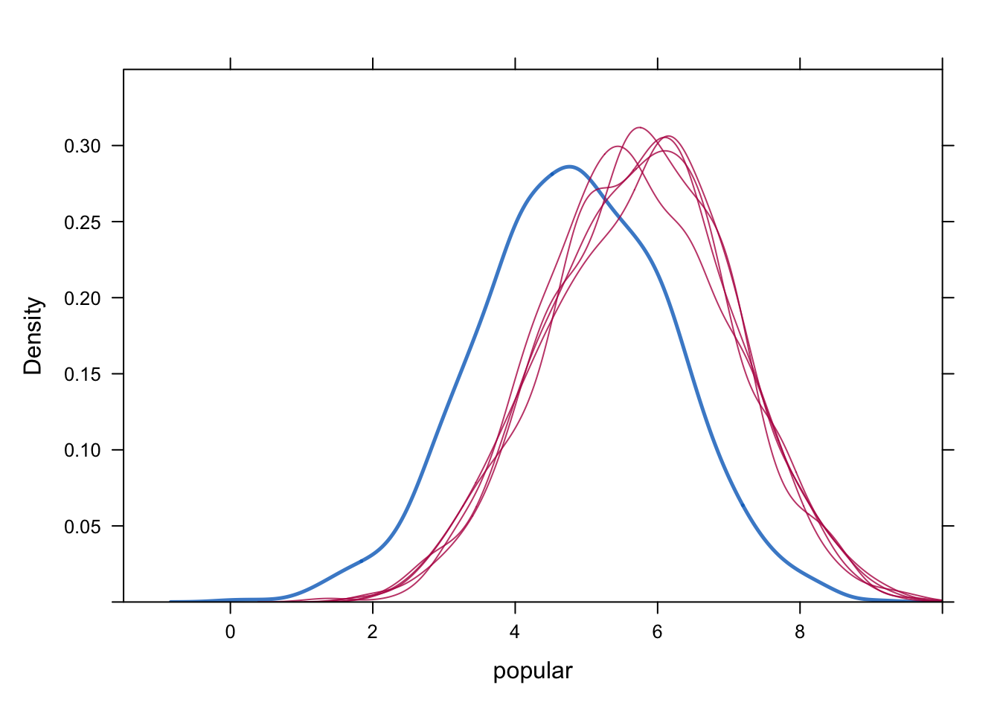
densityplot(imp4, ~popular, ylim = c(0, 0.35), xlim = c(-1.5, 10))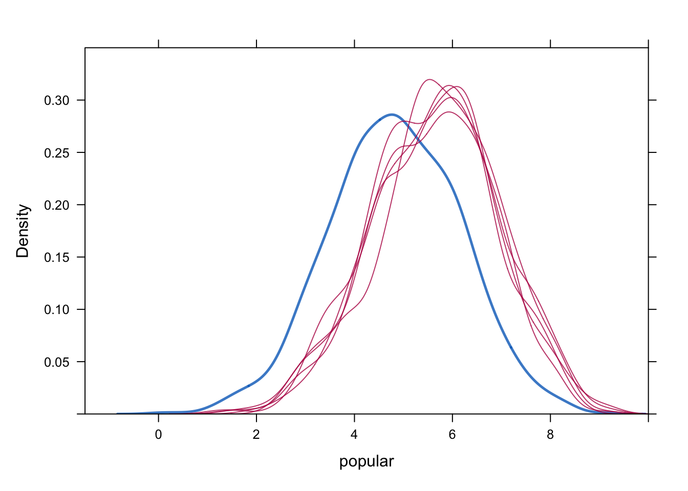
The imputations generated with 2l.norm are very similar to the ones obtained by pmm with class as a fixed effect. If we plot the first imputed dataset from imp4 and imp5 against the original (true) data:
plot(density(popular$popular)) #true data
lines(density(complete(imp5)$popular), col = "red", lwd = 2) #2l.norm
lines(density(complete(imp4)$popular), col = "green", lwd = 2) #PMM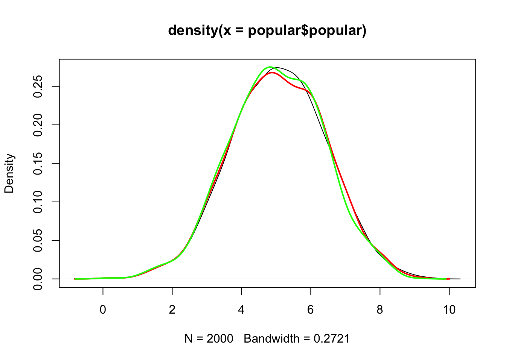
We can see that the imputations are very similar. When studying the convergence
plot(imp5)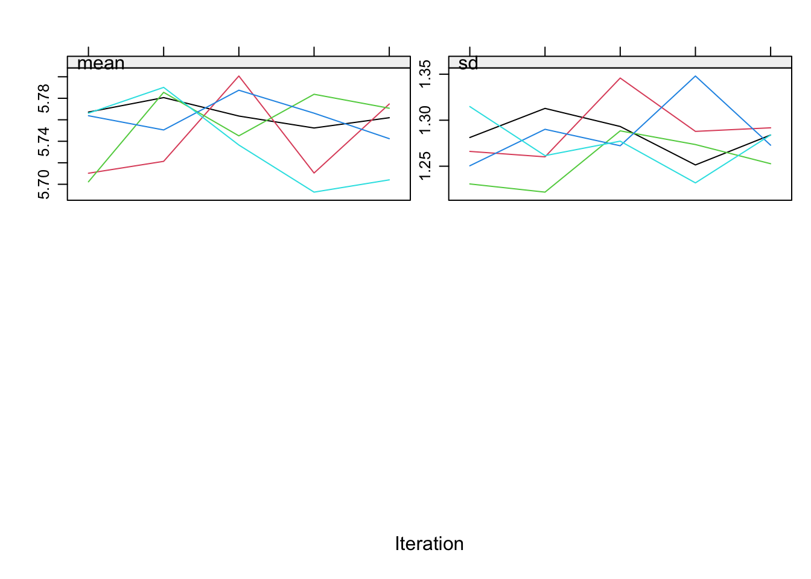
we conclude that it may be wise to run additional iterations. Convergence is not apparent from this plot.
imp5.b <- mice.mids(imp5, maxit = 10, print = FALSE)
plot(imp5.b)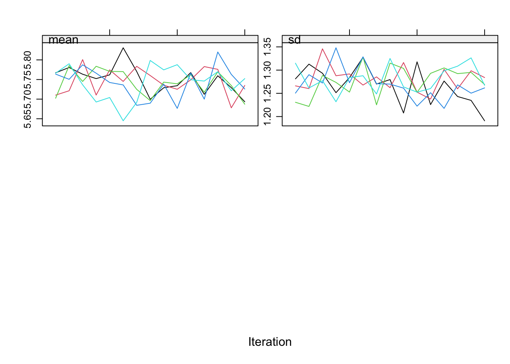
After running another 10 iterations, convergence is more convincing.
23. In the original data, the group variances for popular are homogeneous. Use 2l.pan to impute the variable popular in dataset popNCR2. Inspect the imputations. Did the algorithm converge?
ini <- mice(popNCR2, maxit = 0)
pred <- ini$pred
pred["popular", ] <- c(0, -2, 2, 2, 1, 0, 2)
meth <- ini$meth
meth <- c("", "", "", "", "", "2l.pan", "")
imp6 <- mice(popNCR2, pred = pred, meth = meth, print = FALSE)Let us create the densityplot for imp6
densityplot(imp6, ~popular, ylim = c(0, 0.35), xlim = c(-1.5, 10))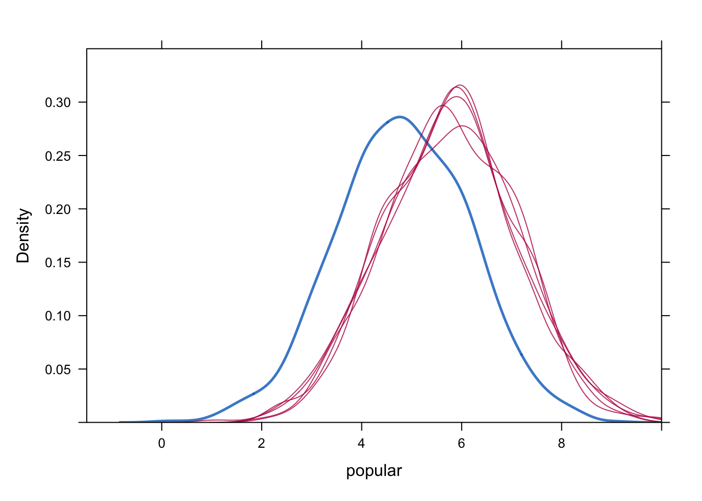
and compare it to the one for imp4
densityplot(imp4, ~popular, ylim = c(0, 0.35), xlim = c(-1.5, 10))
If we plot the first imputed dataset from both objects against the original (true) density, we obtain the following plot:
plot(density(popular$popular), main = "black = truth | green = PMM | red = 2l.pan") #
lines(density(complete(imp6)$popular), col = "red", lwd = 2) #2l.pan
lines(density(complete(imp4)$popular), col = "green", lwd = 2) #PMM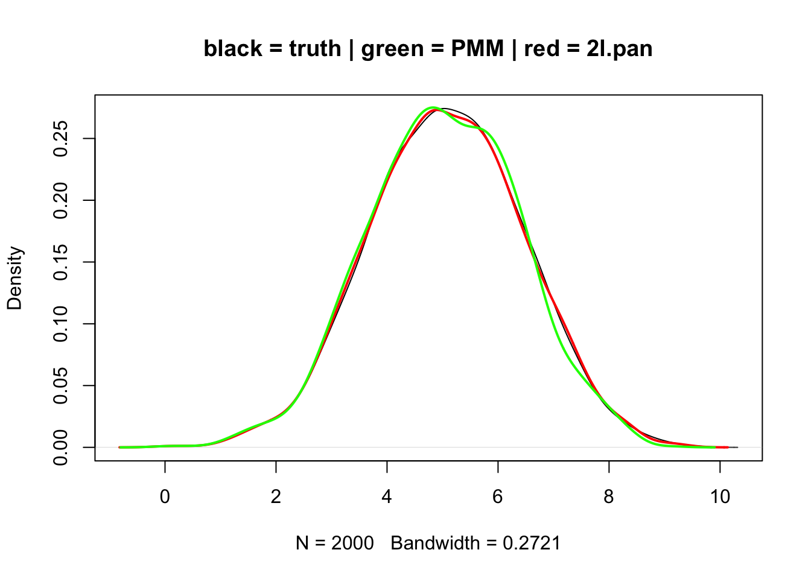
We can see that the imputations are very similar. When studying the convergence
plot(imp6)
we conclude that it may be wise to run additional iterations. Convergence is not apparent from this plot.
imp6.b <- mice.mids(imp5, maxit = 10, print = FALSE)
plot(imp6.b)
Again, after running another 10 iterations, convergence is more convincing.
24. Now inspect dataset popNCR3 and impute the incomplete variables according to the following imputation methods:
| Variable | Method |
|---|---|
| extrav | 2l.norm |
| texp | 2lonly.mean |
| sex | logreg |
| popular | 2l.pan |
| popteach | 2l.pan |
ini <- mice(popNCR3, maxit = 0)
pred <- ini$pred
pred["extrav", ] <- c(0, -2, 0, 2, 2, 2, 2) #2l.norm
pred["sex", ] <- c(0, 1, 1, 0, 1, 1, 1) #2logreg
pred["texp", ] <- c(0, -2, 1, 1, 0, 1, 1) #2lonly.mean
pred["popular", ] <- c(0, -2, 2, 2, 1, 0, 2) #2l.pan
pred["popteach", ] <- c(0, -2, 2, 2, 1, 2, 0) #2l.pan
meth <- ini$meth
meth <- c("", "", "2l.norm", "logreg", "2lonly.mean", "2l.pan", "2l.pan")
imp7 <- mice(popNCR3, pred = pred, meth = meth, print = FALSE)25. Evaluate the imputations by means of convergence, distributions and plausibility.
densityplot(imp7)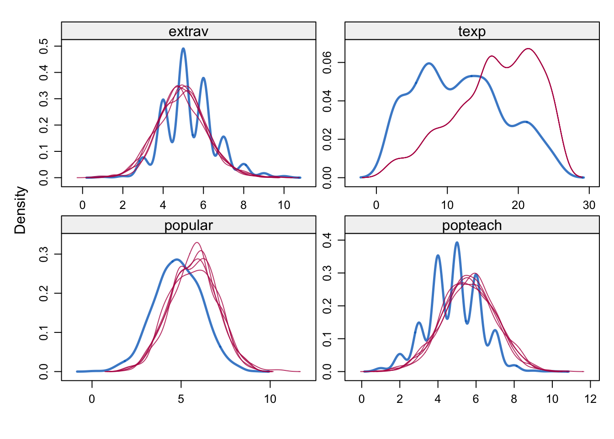
Given what we know about the missingness, the imputed densities look very reasonable.
plot(imp7)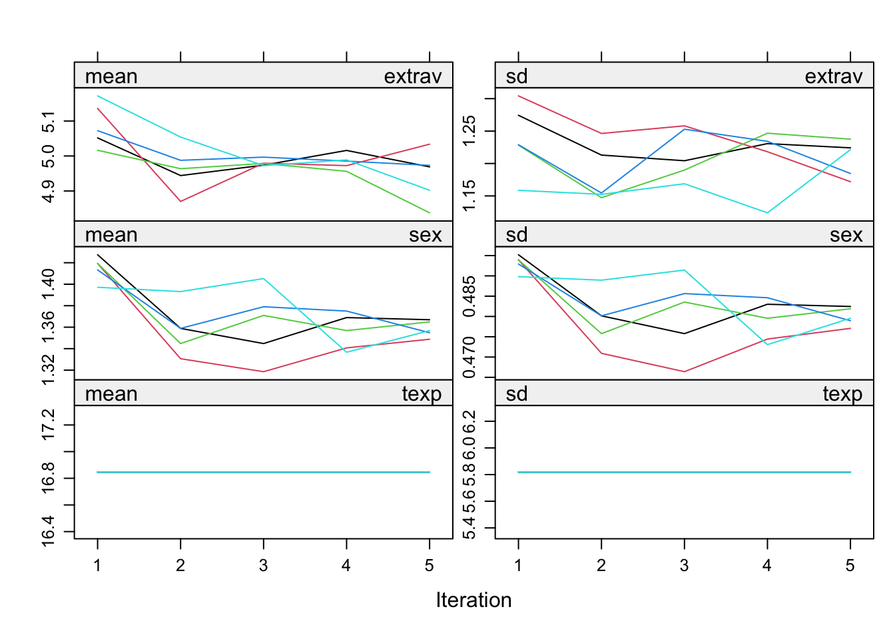
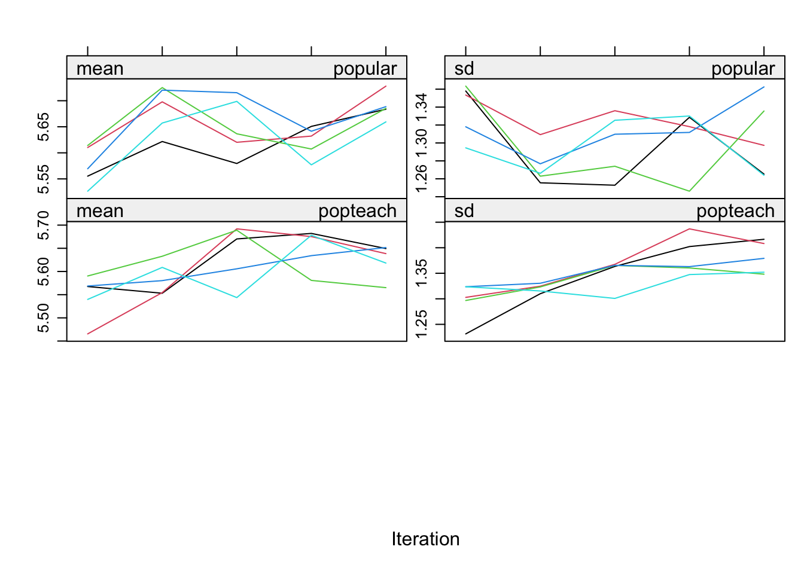
Convergence has not yet been reached. more iterations are advisable.
26. Repeat the same imputations as in the previous step, but now use pmm for everything.
pmmdata <- popNCR3
pmmdata$class <- as.factor(popNCR3$class)
imp8 <- mice(pmmdata, m = 5, print = FALSE)Warning: Number of logged events: 90With pmm, the imputations are very similar and conform to the shape of the observed data.
densityplot(imp8)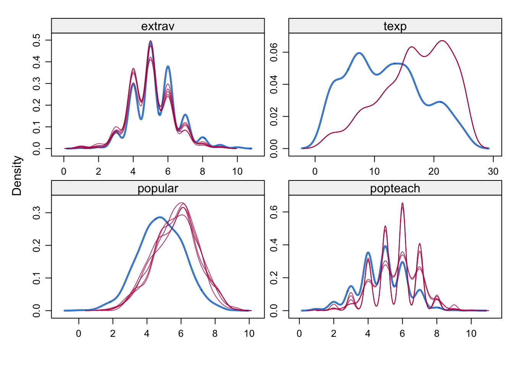
When looking at the convergence of pmm, more iterations are advisable:
plot(imp8)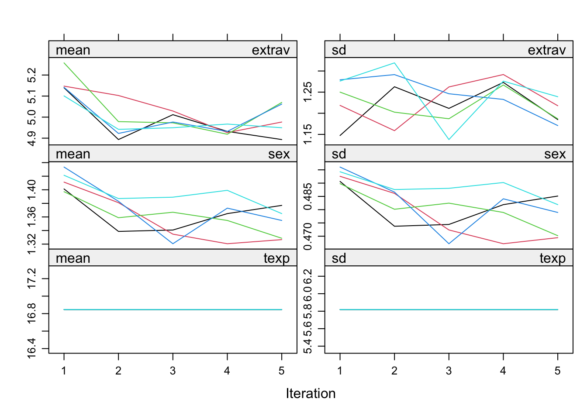
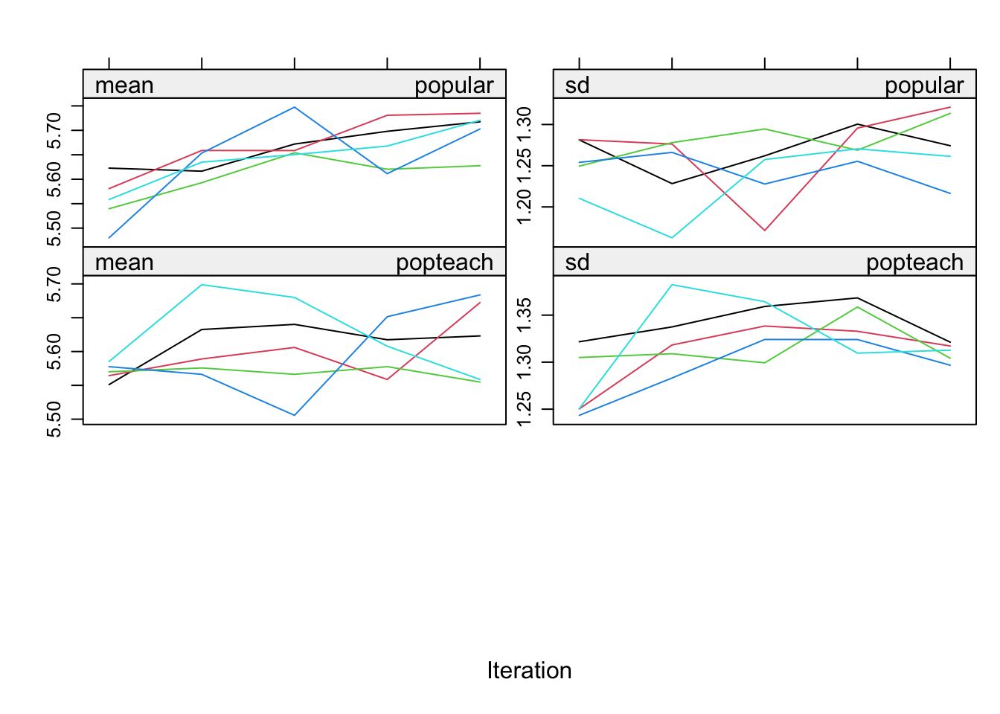
Conclusions
There are ways to ensure that imputations are not just “guesses of unobserved values”. Imputations can be checked by using a standard of reasonability. We are able to check the differences between observed and imputed values, the differences between their distributions as well as the distribution of the completed data as a whole. If we do this, we can see whether imputations make sense in the context of the problem being studied.
References
Gelman, A., & Hill, J. (2006). Data analysis using regression and multilevel/hierarchical models. Cambridge University Press.
Hox, J. J., Moerbeek, M., & van de Schoot, R. (2010). Multilevel analysis: Techniques and applications. Routledge.
Yucel, R. M. (2008). Multiple imputation inference for multivariate multilevel continuous data with ignorable non-response. Philosophical Transactions of the Royal Society of London A: Mathematical, Physical and Engineering Sciences, 366(1874), 2389-2403. Article
- End of Vignette